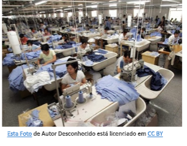
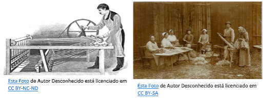
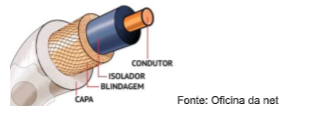
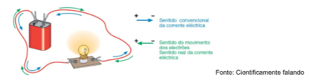
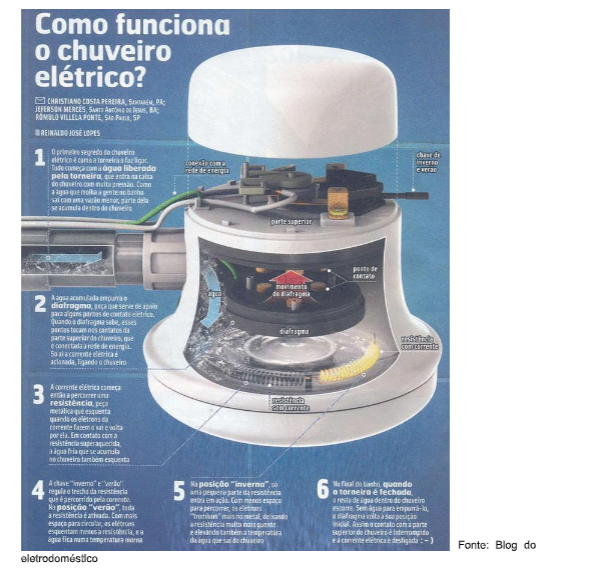
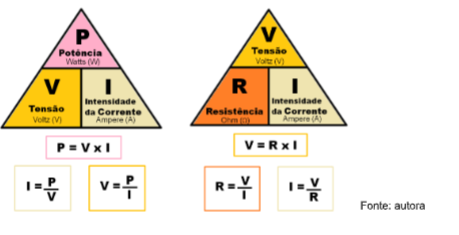
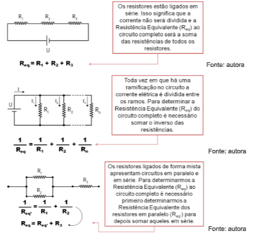

Capítulo 2
Indústria Têxtil e a física da eletricidade
Como é possível o maquinário e a iluminação funcionarem em uma indústria? Que parte da física se relaciona a estas situações? Como classificar os fenômenos?
ContextualizandoToda a cadeia de produção de tecidos e seus derivados, necessita de eletricidade, desde a colheita dos insumos até o produto final na fábrica. E mesmo quando chegam às casas dos consumidores há demanda de eletricidade. É tudo tão natural que não nos perguntamos se hoje em dia, seria possível executar esse processo produtivo sem o auxílio da eletricidade? Como seria a rapidez nas entregas? Pense sobre isso. 
A utilização de eletricidade no setor têxtil diminuiu significativamente os prazos e aumentou as quantidades produzidas. Quando observamos imagens dos processos produtivos não industriais fica claro que a ação humana direta sobre a matéria-prima era a principal fonte de energia para a produção de tecidos e roupas.
Você já parou para pensar que mesmo para processos muito artesanais, como tricotar um casaco, utilizamos eletricidade? Seja para a lâmpada que ilumina o ambiente ou para a impressão da revista com o passo a passo, a energia elétrica é uma novidade que revolucionou completamente a forma e a velocidade em que a sociedade vive.
(Re)construindo conhecimentosChamamos de eletricidade todo o fenômeno que ocorre devido à movimentação ou à diferença das cargas elétricas presentes na matéria.
A eletricidade tem um vocabulário próprio. Esse espaço se dedica a definir algumas dessas palavras ou expressões que irão se repetir ao longo do nosso estudo.
Carga elétrica - é uma propriedade da matéria. Ela pode ser positiva (quando há mais prótons do que elétrons), negativa (quando há mais elétrons do que prótons) ou neutra (quando prótons e elétrons estão balanceados).
Diferença de potencial elétrico - é a energia transferida para movimentar uma carga elétrica. Quanto maior a diferença de potencial, maior a energia envolvida.
Eletricidade - é todo o fenômeno que acontece devido à ação de cargas elétricas.
Eletricidade - é todo o fenômeno que acontece devido à ação de cargas elétricas.
Matéria - tudo aquilo que ocupa lugar no espaço e possui peso, seja visível ou não.
Potência elétrica - em um aparelho elétrico indica a quantidade de energia consumida em um período de tempo. Quanto maior a potência, mais energia é consumida e mais energia está disponível para realizar uma tarefa.
Tensão elétrica - é a grandeza que mede a quantidade de energia necessária para fazer com que uma carga elétrica se desloque de um ponto ao outro (ou seja, mede a diferença de potencial elétrico). Por exemplo, uma tensão de 110 ou 220 Voltz.
Quando as cargas elétricas se movimentam dizemos que há a formação de corrente elétrica. Quanto maior a quantidade de cargas elétricas se movimentando em determinado tempo, maior a corrente elétrica. Quando ligamos uma máquina de costura à tomada, estamos criando uma corrente, onde as cargas elétricas saem da rede de distribuição de energia e chegam até o equipamento através do fio.
A corrente elétrica percorre esse percurso, pois o fio é composto de materiais condutores e isolantes. O condutor, em geral metálico, é facilmente energizado, isso faz com que as cargas elétricas sejam "passadas" adiante, quanto melhor é o condutor, mais eficiente é esse processo. Já o material isolante, em geral um revestimento plástico, não é energizado com facilidade, as cargas não conseguem ser transmitidas através desse material, logo a corrente elétrica fica contida no interior do fio.
Você talvez já tenha ouvido falar em corrente alternada e corrente contínua. Isso se refere exatamente à corrente elétrica. Na corrente elétrica contínua o movimento das cargas negativas (elétrons) acontece sempre no mesmo sentido. Já na corrente elétrica alternada a polaridade do sistema é invertida e o sentido do movimento dos elétrons é modificado periodicamente.
Mas o que faz as carga negativas entrarem em movimento? Cargas negativas tendem a ser atraídas por cargas positivas. Toda vez que há uma diferença entre a quantidade de cargas positivas e negativas se cria um fluxo desordenado de elétrons (cargas negativas) se movimentando em direção à região com carga positiva. Se fornecermos energia ao sistema esse fluxo passa a ser mais ou menos ordenado e o chamamos de corrente elétrica.
Vamos analisar a formação de corrente tomando como exemplo uma lanterna. As extremidades das pilhas colocadas na lanterna são posicionadas em um condutor que se conecta com a lâmpada passando pelo botão de "liga/desliga". Quando ligamos a lanterna, todas as partes do condutor se conectam e os elétrons fluem até a lâmpada que se acende utilizando a energia contida neles. Quando a lanterna é desligada, o sistema de condução é interrompido e a corrente não chega até a lâmpada, que permanece desligada.
O mundo natural impõe uma complicação nessa questão. Não existe um material condutor perfeito. Ao passar pelo condutor, a corrente elétrica enfrenta uma resistividade para circular. Além disso, a forma do corpo por onde a corrente passa também pode oferecer resistência a sua passagem. Essa resistência leva à perda de parte da energia fornecida, que em geral se dissipa como calor. Quanto maior a resistência à passagem da corrente mais calor é dissipado.
O princípio da resistência dos materiais à corrente possibilitou o desenvolvimento de resistores. Os resistores são dispositivos que limitam a intensidade da corrente elétrica justamente por oferecer resistência a sua passagem. É assim que um chuveiro elétrico funciona: a corrente elétrica passa por um resistor que resiste à passagem da corrente vinda do sistema elétrico e dissipa a energia térmica resultante no reservatório de água, a aquecendo.
Você sabia?
O chuveiro elétrico faz parte do cotidiano da maior parte das pessoas. Seu funcionamento é baseado na resistência à passagem da corrente elétrica.
O chuveiro de sua casa já queimou? Um dos motivos que podem causar isso é a presença de ar no reservatório. Nesse caso, a energia térmica produzida na resistência não se dissipa adequadamente e o aumento intenso de temperatura provoca o derretimento do metal.
Você conhece outros motivos para o mal funcionamento de um chuveiro elétrico?
Todos essas grandezas (corrente elétrica, resistência, potência, tensão) estão relacionadas, a modificação de uma altera as outras. Quando o aumento de uma grandeza leva ao aumento de outra, dizemos que elas são diretamente proporcionais. Entretanto, quando o aumento de uma grandeza leva à diminuição de outra, dizemos que são inversamente proporcionais.
As relações de proporcionalidade nos ajudam a entender como podemos calcular matematicamente cada uma dessas grandezas. Já que relações diretamente proporcionais têm efeito multiplicativo (reforça o efeito) e relações inversamente proporcionais têm efeito de divisão (atenua o efeito). Observe os triângulos e as fórmulas relacionadas na imagem, você consegue explicar como as fórmulas são montadas a partir do triângulo?
 Ação e reflexãoUm circuito elétrico pode ser construído associando diferentes resistores que ajustam a tensão e corrente para os diferentes tipos de equipamentos elétricos.
O resistores podem ser associados em série (quando estão ligados em sequência), em paralelo (quando a corrente elétrica é dividida ao longo do circuito) ou de forma mista.
A forma de associação dos resistores é essencial para determinar como será a resistência equivalente, ou seja, a resistência total do circuito. E qual o sentido prático disso? A tensão que chega nas tomadas brasileiras pode ser de 110V ou 220V, para alguns equipamentos elétricos sensíveis essa quantidade de energia é muito alta e pode causar danos. Os resistores são adicionados ao circuito elétrico justamente para atenuar a corrente ou a tensão elétrica e proteger os componentes. Quando usamos a associação em série a corrente elétrica permanece constante, mas a tensão é atenuada. Já na associação em paralelo a tensão permanece constante, mas a corrente é dividida nas ramificações do circuito.
Pensando nessas questões, o desafio que você tem agora é explicar quais as consequências de uma associação de resistores mista?
Lembre-se de reservar um tempo para avaliar o que você já aprendeu e quais pontos precisam ser retomados. Nesse capítulo discutimos um pouco sobre os impactos que o desenvolvimento de equipamentos elétricos teve na indústria têxtil e como a eletricidade age em equipamentos.
As máquinas elétricas aumentaram a produção de tecidos e roupas além de acelerarem significativamente o processo de fabricação. Atualmente é praticamente impossível realizar mesmo atividades tradicionais, como tricotar um casaco, sem utilizar eletricidade no processo.
A eletricidade engloba todos os fenômenos decorrentes da ação de cargas elétricas, estejam elam em movimento ou paradas.
Quando se forma uma diferença de potencial, as cargas negativas (elétrons) tendem a criar um fluxo em direção às regiões positivas. O que gera uma corrente elétrica.
A corrente elétrica pode ser contínua (quando o fluxo de elétrons segue sempre o mesmo sentido), o caso de pilhas e baterias, ou alternada (quando variações na polaridade do sistema causam a mudança de sentido dos elétrons), que é o caso da energia distribuída nas residências.
É possível adicionar resistores em um circuito elétrico para atenuar a corrente ou a tensão elétrica. Isso é importante, pois a voltagem das tomadas, por exemplo, é constante e pode danificar equipamentos sensíveis.
Um exemplo muito simples de equipamento doméstico que funciona a partir de resistência é o chuveiro elétrico. A alta resistência dos resistores instalados fazem com que parte da energia que chega pela corrente elétrica seja dissipada na forma de calor, aquecendo a água do banho.